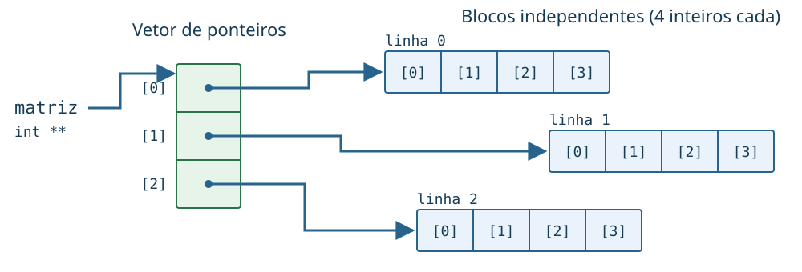
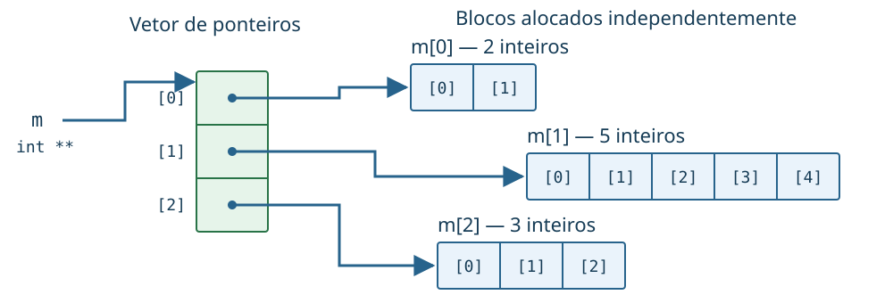

Programação Estruturada
UFABC
2026-10-30
Vamos usar ponteiros em alguns exemplos mais concretos:
struct);Considere a função:
E a chamada:
vetor foi alterado?
No código
v recebe uma cópia do valor de vetor.
O resultado de malloc muda apenas a cópia local v.
vetor continua valendo NULL e o endereço do bloco é perdido (memory leak)
Solução: Ponteiros de ponteiros!
Unsando ponteiros de ponteiros:
Chamada:
Agora v recebe o endereço de um ponteiro.
aloca_vetorDentro da função:
v é um int **;*v é um int *;**v seria um int. Cada * remove um nível de ponteiro.
#include <stdio.h>
#include <stdlib.h>
void aloca_vetor(int **v, int n) {
*v = malloc(n * sizeof(int));
}
int main() {
int *vetor = NULL;
aloca_vetor(&vetor, 5);
if (vetor == NULL)
return 1;
for (int i = 0; i < 5; i++)
vetor[i] = i * i;
for (int i = 0; i < 5; i++)
printf("%d ", vetor[i]);
free(vetor);
return 0;
}Uma forma de representar uma matriz é usar um vetor de ponteiros.
Uma matriz é um vetor de vetores
Para uma matriz com 3 linhas e 4 colunas:
int **matriz = malloc(3 * sizeof(int *));
for (int i = 0; i < 3; i++)
matriz[i] = malloc(4 * sizeof(int));Agora podemos usar:

As linhas não precisam ser vizinhas na memória; os elementos de cada linha são contíguos.
Cada malloc precisa do seu próprio free.
A ordem é importante
primeiro liberamos as linhas, depois o vetor de ponteiros.
Como cada linha é alocada independentemente:

Ponteiros permitem que cada linha tenha uma organização própria
A entrada m[i] nos diz onde os dados começam na linha i.
Mas qual o tamanho da linha m[i]?
Podemos guardar essas informações junto com o ponteiro.
Veremos como fazer isso com struct.
Considere as funções:
double soma(double a, double b) {
return a + b;
}
double multiplica(double a, double b) {
return a * b;
}Assim como dados, código também ocupa uma região da memória.
Podemos guardar o endereço de uma função em um ponteiro.
Um ponteiro para uma função que recebe dois double e retorna double:
Chamadas:
Muito comum esse tipo de estrutura em funções de ordenação.
struct)Para representar um aluno, queremos guardar:
int;double.Uma struct permite agrupá-los em um único tipo.
structAgora struct aluno é um tipo que contém três campos.
Acessamos seus campos com .:
Também podemos inicializar uma struct de uma vez:
#include <stdio.h>
// Declaração do tipo de dados(estrutura);
struct aluno {
int ra;
char nome[100];
char curso[20];
};
int main() {
struct aluno p; // Variável do tipo struct
scanf("%d", &p.ra);
scanf("%s", p.nome);
scanf("%s", p.curso);
printf("RA=%d Nome=%s Curso=%s\n", p.ra, p.nome, p.curso);
return 0;
}Podemos dar um novo nome a um tipo para facilitar declaração:
Com isso, podemos declarar Aluno a ao invés de struct aluno a
Cada posição contém um Aluno completo.
Qual a saída do seguinte trecho de código?
p.x = 3, p.y = 4typedef struct {
int ra; char nome[100]; int nota;
} Aluno;
void muda_nome(Aluno a1){
a1.nome = "Nala Santos";
}
int main(){
Aluno a1 = {123, "Lola da Silva", 9.0};
muda_nome(a1);
puts(a1.nome);
return 0;
}Nala SantosAssim como no caso de tipos primitivos como int, a função recebe uma cópia.
Para modificar a variável original, passamops seu endereço.
-> simplifica o acessoEm caso de ponteiros para uma struct, podemos substituir
Para
Em outras palavras: -> acessa um campo através de um ponteiro para struct.
Uso:
Se a não for NULL, podemos fazer
struct pode guardar ponteiro e tamanhoVoltando à matriz com linhas de tamanhos diferentes:
Agora cada Linha guarda:
Linha representa uma matriz irregularAgora podemos declarar
Cada variável do tipo Linha descreve uma linha inteira.
Podemos escolher um tamanho diferente para cada posição:
O campo matriz[i].dados não vem alocado. Alocando manualmente:
Como imprimir toda as entradas de matriz?
Cada campo dados aponta para um bloco diferente que precisa ser liberado
Primeiro, alocamos um vetor de variáveis do tipo Linha
Depois alocamos o vetor de dados cada linha:
Os dados em variáveis desaparecem quando o programa termina.
Um arquivo permite armazenar dados de forma persistente.
Em C, um arquivo aberto é manipulado através do tipo FILE *.
| Modo | Uso |
|---|---|
"r" |
ler um arquivo existente |
"w" |
escrever; apaga o conteúdo anterior |
"a" |
acrescentar ao final |
Existem outros modos e operações sobre arquivos, mas não vamos ver eles em detalhes nessa aula.
fprintf escreve como printfPodemos salvar os campos de um Aluno:
fscanf lê como scanfSe o arquivo aluno.txt contém:
podemos ler diretamente para uma struct:
Aluno a;
FILE *arquivo = fopen("aluno.txt", "r");
if (arquivo == NULL) return 1;
fscanf(arquivo, "%d %s %lf", &a.ra, a.nome, &a.nota);
printf("%d %s %.1f\n", a.ra, a.nome, a.nota);
fclose(arquivo);Os argumentos de fscanf seguem as mesmas regras do scanf.